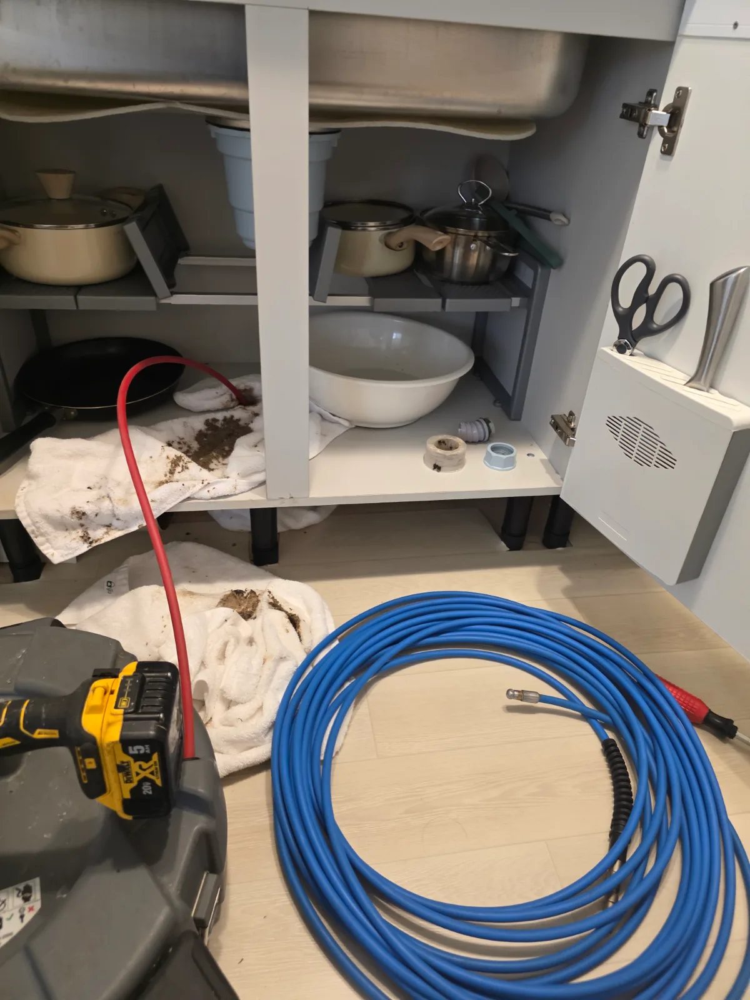
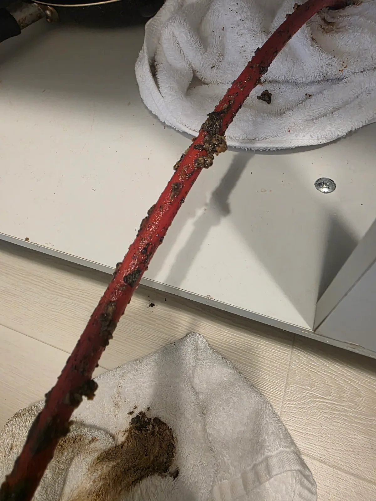

광진구 능동 싱크대막힘, 현장 도착 후 진단
서울 광진구 능동의 외국인 이용객이 많은 숙소에서 싱크대막힘으로 긴급 연락을 받았습니다.
투숙객이 퇴실한 후 객실을 정리하던 중 싱크대에서 물이 역류하기 시작한 상황이었습니다. 오후에 새로운 투숙객을 맞이해야 했기 때문에 빠른 문제 해결과 깔끔한 작업 마감이 중요한 현장이었습니다.
신라건축설비는 공휴일에도 운영하는 24시간 출동 체계를 통해 신속하게 현장으로 이동했습니다.
싱크대 하부 배수관을 확인한 결과 입구부에 기름성 이물질이 축적되어 있었으며, 배관 내시경 장비를 활용한 내부 점검도 진행했습니다.
막힘이 심한 상태였기 때문에 입구부의 이물질만 제거하는 것으로는 충분하지 않다고 판단했습니다. 이에 석션으로 기름때를 회수한 후 샤프트와 고압세척으로 배관 내부까지 정비하는 작업을 진행했습니다.
1단계: 증상 확인과 필요한 장비 작업
먼저 싱크대 하부 배수관에 석션 장비를 적용해 입구부에 축적된 기름때와 이물질을 흡입해 회수했습니다.
석션은 배관 입구에 모여 있는 오염물을 제거하는 데 효과적이지만, 안쪽 배관 벽면에 단단하게 부착된 기름때까지 모두 제거하기에는 한계가 있습니다.
이번 현장은 내부에도 기름성 이물질이 남아 있을 가능성이 높아 석션 작업만으로 마무리하지 않았습니다.
입구부의 이물질을 먼저 정리한 후 배관 내부에 부착된 오염물을 제거하기 위해 샤프트 장비를 투입했습니다.

2단계: 원인 구간 처리와 정상 작동 확인
샤프트 장비를 이용해 배관 내벽에 달라붙은 기름때와 이물질을 물리적으로 제거했습니다.
작업 과정에서 장비 케이블에 검고 갈색을 띤 오염물이 묻어 나오는 것을 확인할 수 있었습니다. 배관 내부에 기름성 이물질이 상당량 축적되어 있었음을 보여주는 작업 흔적입니다.
샤프트 작업은 배관 내벽에 붙어 있는 오염물을 제거해 물이 흐를 수 있는 통로를 확보하는 과정입니다.
그러나 샤프트로 떨어뜨린 찌꺼기가 배관 안에 남아 있으면 다시 배수를 방해할 수 있습니다. 따라서 잔여 이물질을 씻어내기 위해 고압세척 작업을 추가로 진행했습니다.
고압세척으로 배관 내부에 남은 기름때와 찌꺼기를 배출하며 배수 흐름을 회복하는 데 중점을 두었습니다.

작업 결과와 재발 방지 안내
석션을 통한 입구부 기름때 회수부터 샤프트 작업, 고압세척까지 단계적으로 진행한 후 싱크대의 최종 통수 상태를 확인했습니다.
막힘이 해소되고 싱크대 물이 원활하게 배수되는 것을 확인했으며, 작업 주변을 정리해 마무리했습니다.
이번 광진구 능동 현장은 오후 투숙객 입실을 앞두고 신속한 대응과 깔끔한 마감이 요구되었던 숙박시설 싱크대막힘 해결 사례입니다.
숙박시설처럼 여러 사람이 싱크대를 사용하는 환경에서는 기름과 음식물 찌꺼기가 배수관으로 반복 유입될 수 있으므로 관리가 중요합니다.
특히 기름기가 많은 음식물이나 국물을 한꺼번에 흘려보내지 않도록 주의하고, 배수 속도가 느려지거나 역류 현상이 반복된다면 배관 내부의 이물질 축적 여부를 점검하는 것이 좋습니다.
신라건축설비는 막힘의 위치와 배관 내부 상태에 따라 석션, 샤프트, 고압세척을 단계적으로 적용하고 최종 통수 상태까지 확인하며 작업을 마무리하고 있습니다.
최종 조치: 석션을 통한 입구부 기름때 회수, 샤프트를 이용한 배관 내부 이물질 제거, 고압세척을 통한 잔여 이물질 배출 및 최종 싱크대 통수 확인
현장 방문 전 확인하는 비용과 작업 범위
신라건축설비는 현장 증상과 배관 구조를 확인한 뒤 필요한 작업과 예상 비용을 안내합니다. 단순 관통으로 해결되는지, 배관내시경·석션·고압세척 또는 추가 장비가 필요한지는 현장 상태에 따라 달라집니다. 출장비와 야간 작업비, 추가 장비 비용이 발생할 수 있는 경우 작업 전에 먼저 설명하고 동의를 받은 범위에서 진행합니다.
업체를 선택할 때 확인할 사항
무조건적인 ‘0원’ 표현보다 실제 작업 범위, 추가 비용 조건, 사용 장비와 사후 대응 기준을 확인하는 것이 중요합니다. 해결되지 않았을 때의 비용 기준과 작업 후 동일 증상 발생 시 점검 범위를 사전에 문의해두면 불필요한 분쟁을 줄일 수 있습니다.
광진구 싱크대막힘 자주 묻는 질문
싱크대막힘은 왜 반복되나요?
주방 배수관 내부에 기름때·슬러지·음식물 찌꺼기가 누적되거나 배관 구배와 긴 횡주관 때문에 반복될 수 있습니다. 단순 관통 후 다시 막힌다면 배수관 내부 상태를 확인하는 것이 좋습니다. 이번 광진구 능동 현장에서 확인한 원인은 다음과 같습니다. 싱크대 배수관 입구부와 내부에 축적된 기름성 이물질로 인한 배관 막힘
싱크대 물이 안 내려가거나 역류하면 싱크대뚫는업체를 불러야 하나요?
물이 천천히 빠지거나 싱크대역류가 반복되면 배수구 입구보다 안쪽 주방 배관에 막힘이 있을 수 있습니다. 현장에서는 배수 상태와 막힌 구간을 확인한 뒤 작업 방법을 정합니다.
싱크대 기름때 막힘은 약품으로 해결되나요?
가벼운 오염은 일시적으로 나아질 수 있지만 굳은 기름 슬러지와 배관 내부 스케일은 약품만으로 충분히 제거되지 않는 경우가 있습니다. 반복 막힘은 장비를 이용한 배관 청소가 필요할 수 있습니다.
싱크대뚫는업체는 어떤 장비로 작업하나요?
막힘 위치와 배관 상태에 따라 석션, 샤프트, 배관내시경, 배관 스케일링 장비 등을 사용합니다. 필요한 장비는 현장 진단 후 결정합니다.
싱크대막힘 비용은 어떻게 정해지나요?
막힘 구간의 길이와 오염 정도, 석션·샤프트·내시경 등 장비 투입 범위에 따라 달라질 수 있습니다. 작업 전 예상 범위와 추가 비용 조건을 먼저 안내합니다.
싱크대 악취도 배수관 막힘과 관련 있나요?
기름 슬러지와 음식물 오염이 배수관 내부에 쌓이면 배수 불량과 함께 악취가 나타날 수 있습니다. 다만 트랩이나 연결부 문제도 있어 현장 상태를 함께 확인해야 합니다.
싱크대막힘 서울·경기 출동지역
신라건축설비는 광진구 능동 현장을 포함해 서울 25개 구와 경기도 31개 시·군의 배관 문제를 상담합니다. 현장 거리와 기사 배정 상황에 따라 출동 가능 여부를 먼저 안내드립니다.
서울 전 지역
강남구 · 강동구 · 강북구 · 강서구 · 관악구 · 광진구 · 구로구 · 금천구 · 노원구 · 도봉구 · 동대문구 · 동작구 · 마포구 · 서대문구 · 서초구 · 성동구 · 성북구 · 송파구 · 양천구 · 영등포구 · 용산구 · 은평구 · 종로구 · 중구 · 중랑구
경기도 주요 출동지역
수원시 · 용인시 · 고양시 · 화성시 · 성남시 · 부천시 · 남양주시 · 안산시 · 평택시 · 안양시 · 시흥시 · 파주시 · 김포시 · 의정부시 · 광주시 · 하남시 · 광명시 · 군포시 · 양주시 · 오산시 · 이천시 · 안성시 · 구리시 · 의왕시 · 포천시 · 양평군 · 여주시 · 동두천시 · 과천시 · 가평군 · 연천군